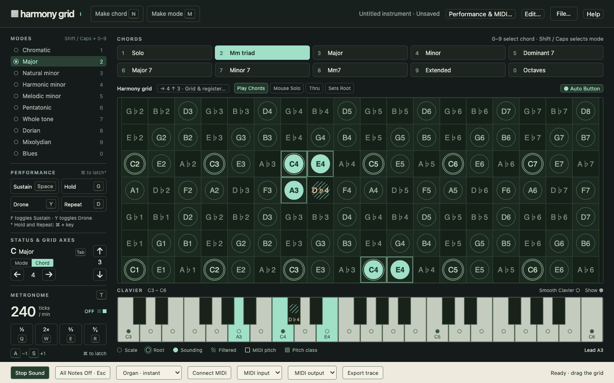

Start with a sound
Open the instrument and choose a synthesized or sampled voice. Sound is ready by default; click the grid if your browser needs an interaction to enable it.
A visual instrument for musical exploration
Move through a world of chords, scales and rhythm. Harmony Grid turns musical relationships into a space you can play.
Play Harmony Grid ↗Free to play · No install · Best with a desktop and keyboard
Choose a chord and a mode, then move its root across the grid. The notes reveal what sounds and what the mode filters out.
Open the instrument and choose a synthesized or sampled voice. Sound is ready by default; click the grid if your browser needs an interaction to enable it.
Drag across the grid to transpose your chord. Change modes to hear a different set of possibilities.
Sustain individual notes, hold a harmony, add a drone, or let the metronome drive repeated strikes.
The grid, clavier and keyboard controls work together as one playing surface. Open Help inside the instrument for a spatial map of your playing keys.

The real instrument, running in the browser.
Scale rings, sounding notes and filtered hatching show how your chord meets the mode. Change the grid’s intervals to explore a different layout.
Play with tempo, Repeat, Sustain, Hold and Drone. Use keyboard controls while your pointer moves through the grid.
Capture pitches, create chords and modes, and save your instrument as a file. Reopen it when you want to pick up where you left off.
Play with the built-in voices, or connect MIDI input and output where your browser supports it.
Reimagined for the browser
A modern recreation of Harmony Grid, guided by the original manual. Built for exploring musical ideas through direct, hands-on play.